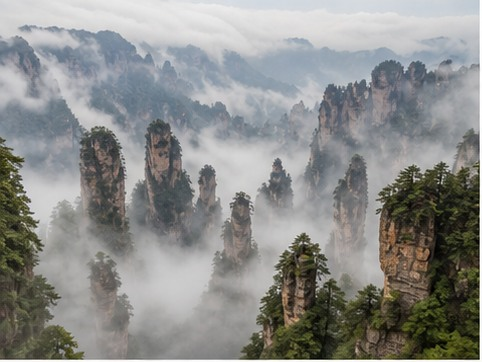
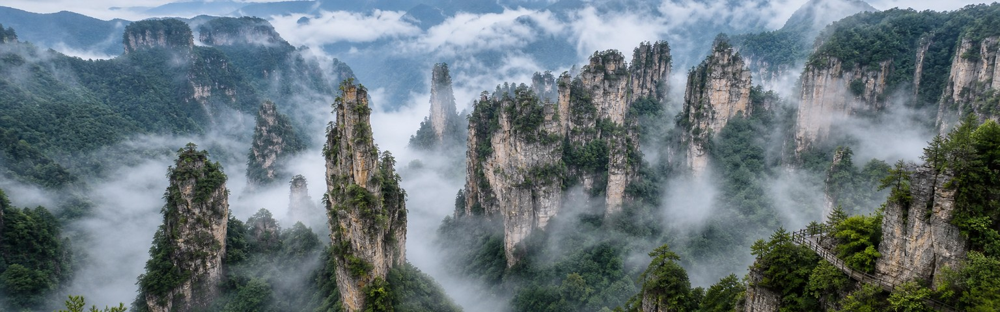
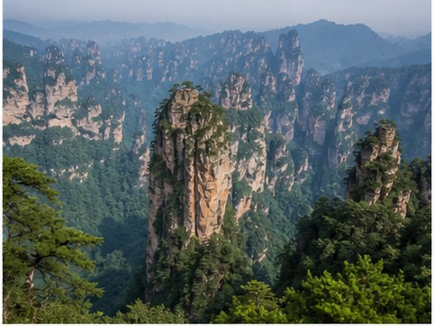
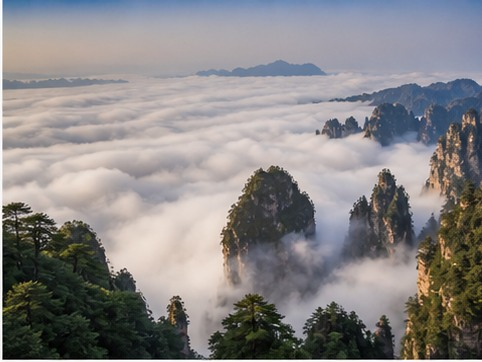
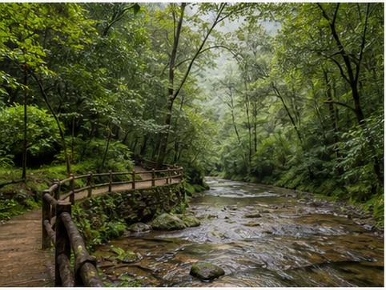
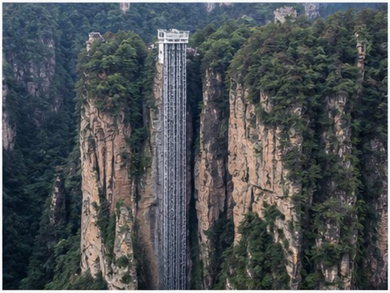
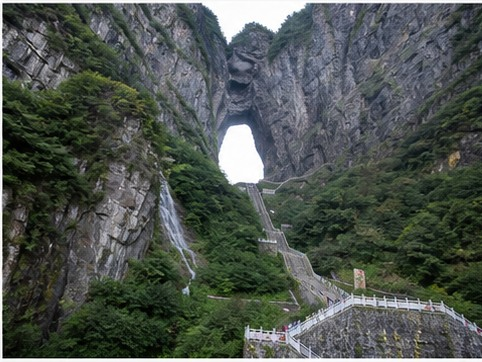
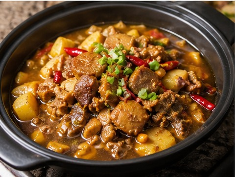

01
National Forest Park
The essential core of Zhangjiajie’s sandstone landscape.

Sandstone peaks above the clouds
In northwestern Hunan, more than three thousand quartz-sandstone pillars rise above deep ravines and subtropical forest. The formations are so distinctive that the landscape type itself carries the Zhangjiajie name, giving the national park a scale and silhouette unlike anywhere else in China.
The area is often linked to the floating mountains of Avatar, but the real experience is grounded in changing weather, forest walks, cliff elevators, cableways, and viewpoints that appear and disappear through mist. Because the scenic zones are spread out, hotel location and daily sequencing matter as much as the list of sights.
01
Start here

The essential core of Zhangjiajie’s sandstone landscape.

Towering pillars and the viewpoint associated with Avatar.

High ridges and shifting seas of cloud above the valleys.

A gentler forest walk beneath the vertical peaks.

A dramatic vertical connection built against the cliffs.

Cableway, mountain arch, glass walkways, and the famous road.
02
Eat like a local

03
Recommended time
Four or five days cover the forest park and Tianmen Mountain; a sixth makes room for the canyon or Fenghuang.
Get ItinerarySpend two full days inside Wulingyuan, then visit Tianmen Mountain with realistic transfer and cableway timing.
Add the Grand Canyon glass bridge or a slower forest day without stacking too many viewpoints together.
Connect Zhangjiajie with Fenghuang Ancient Town while keeping the national park unhurried.
Your Zhangjiajie, made clearer
Tell us your dates, walking comfort, and must-see viewpoints. We’ll sequence the park around weather, transfers, and crowd patterns.
Start With Your Zhangjiajie Trip